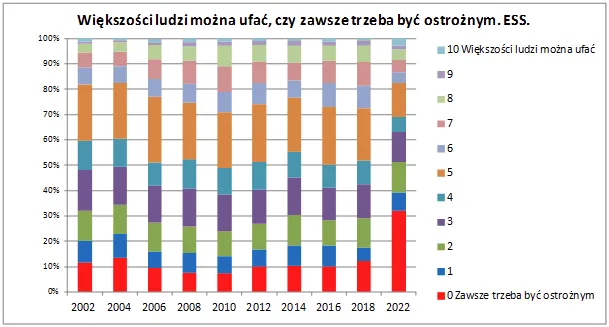

Większości ludzi można ufać, czy zawsze trzeba być ostrożnym?
"Większości ludzi można ufać, czy zawsze trzeba być ostrożnym?" To tylko jedno z pytań w powtarzanych cyklicznie akademickich badaniach społecznych. Jest takie pojęcie " kapitał społeczny", jest to suma wszystkiego, co dobre w relacjach międzyludzkich, co poprawia jakość życia i czyni dane społeczeństwo bardziej atrakcyjnym i konkurencyjnym od innych. Nasz nieszczęśliwy kraj od 30 lat z roku na rok jest bardziej nieszczęśliwy, a ostatnie 4 lata to tryb turbo zapadania się wszelkich relacji i autorytetów.
W formie zapowiedzi dużego raportu nad jakim teraz pracuję "Polacy w XXI wieku, zmiany i zagrożenia. Bilans społeczny 2002-2022. " Poniżej jeden z dziesiątków podobnych wykresów, które przyprawiają o zawrót głowy, jak można w ciągu 4 lat gwałtownie zniszczyć psychikę milionów ludzi. Badania tego typu obejmują osoby w wieku 15+, wiec nasze 100% to ok. 30 mln Polaków. Od 2018 odsetek osób, które wybierają w pytaniu o zaufanie do innych skrajną opcję 0 'Zawsze trzeba być ostrożnym' wzrósł z 12% na 32%, a procent osób w różnym stopniu nieufnych do innych wzrósł z poziomu 50% do 70% .Suma tych, którzy ufają innym to raptem 18%. Pozostali to niezdecydowani. Ostatnia runda badania była robiona tuż po "plandemii", czyli też po wyborach prezydenckich, ale jeszcze przed parlamentarnymi. Już się boję wyników z tego roku, które będą dostępne za rok.
Zapraszam potencjalnych sponsorów raportu, który zostanie rozesłany do licznych instytucji państwowych, w tym całej administracji i ośrodków naukowych oraz koncernów i spółek Skarbu Państwa.
Paweł Klimczewski